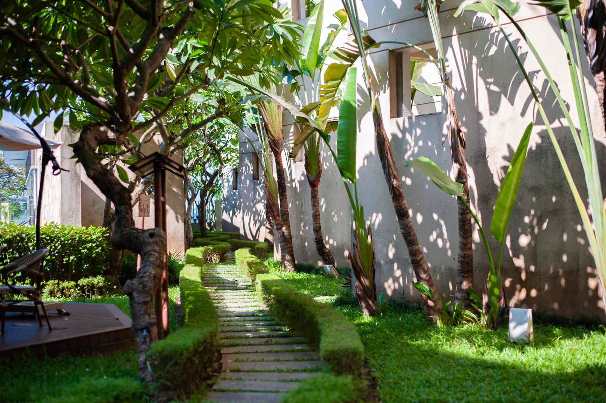
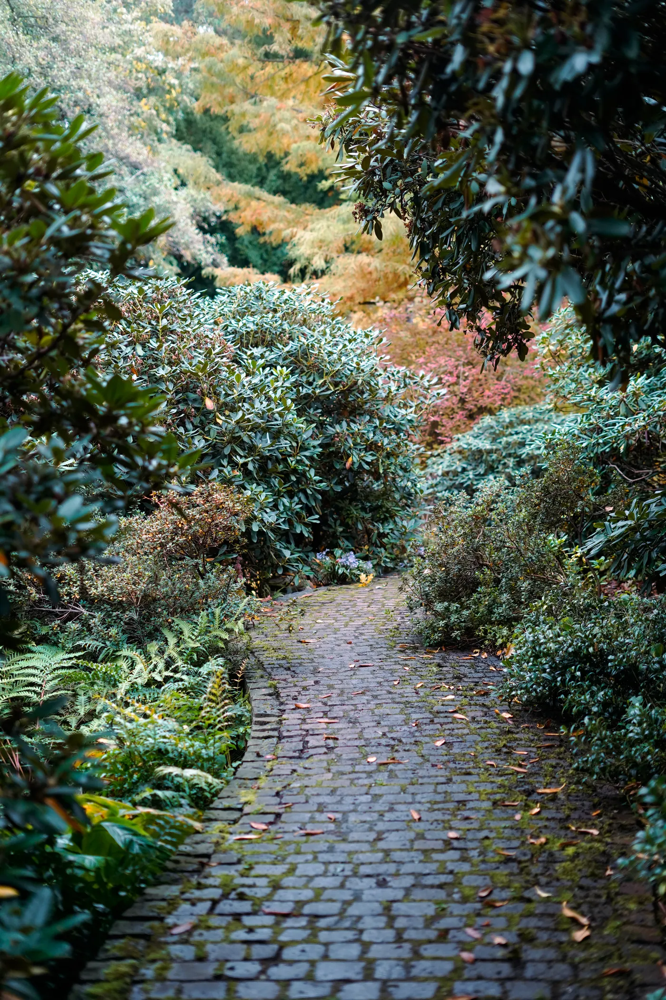
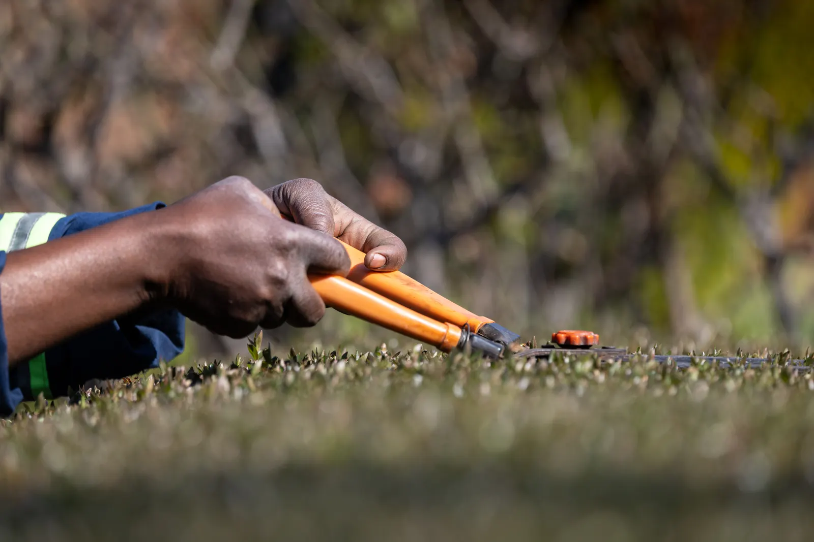
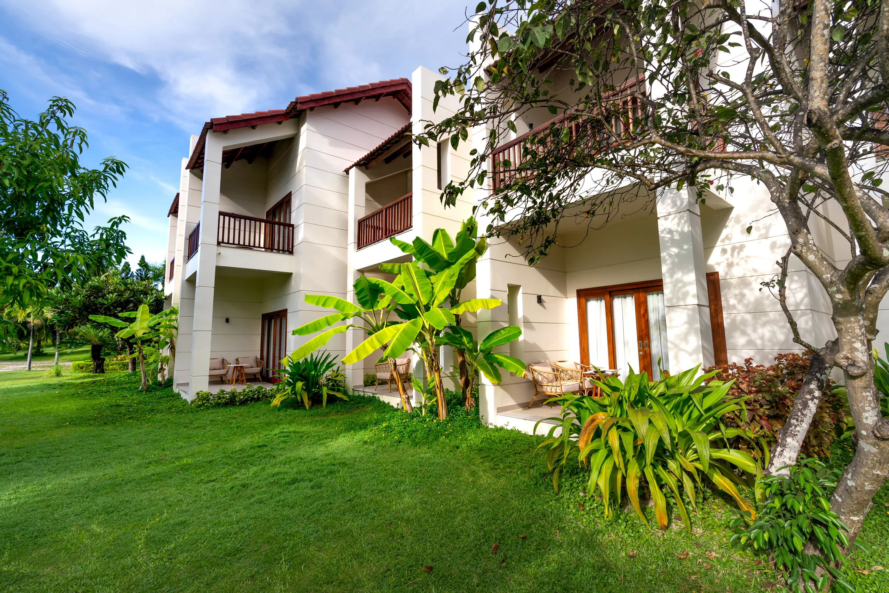

Jardinagem
Seu jardim precisa de atenção? Descreva o ambiente e os cuidados que procura. A Oliveira confirma os serviços disponíveis para a sua necessidade.
Consultar jardinagem ↗
Jardinagem e paisagismo com a Oliveira Gardening. Uma conversa para cuidar do que já existe e pensar no que pode florescer.
Fotografia ilustrativa de banco.
Um olhar para o verde que faz parte da sua vida.
A Oliveira Gardening atua com jardinagem e paisagismo. Este é o ponto de partida para conversar sobre seu espaço, o que precisa de atenção e o que você gostaria de transformar.
Um jardim existente ou uma ideia ainda no começo: compartilhe sua necessidade e consulte as possibilidades de atendimento diretamente pelo WhatsApp.
Apresentar minha ideia ↗
Conte como está seu espaço e o que você procura. Consulte os serviços e as condições adequadas ao seu caso.
Seu jardim precisa de atenção? Descreva o ambiente e os cuidados que procura. A Oliveira confirma os serviços disponíveis para a sua necessidade.
Consultar jardinagem ↗Compartilhe ideias, referências e o que deseja para sua área verde. Converse sobre as possibilidades para o espaço e como funciona o atendimento.
Conversar sobre paisagismo ↗
Folhagens, luz e espaços ao ar livre: referências para ajudar você a explicar o que gosta.
Esta galeria reúne fotografias ilustrativas de banco. Não são projetos ou serviços realizados pela Oliveira Gardening.
Compartilhar uma referência ↗
Prepare sua mensagem e continue a conversa no WhatsApp. Você pode enviar fotos do espaço por lá.
(48) 98436-0888A mensagem só é enviada quando você confirmar no WhatsApp. Consulte disponibilidade e valores durante a conversa.
Informe sua cidade e seu bairro para consultar a área de atendimento e combinar o próximo passo com a Oliveira Gardening.
Consultar minha região ↗Entre em contato pelo WhatsApp (48) 98436-0888, descreva sua necessidade e informe a localização do espaço. A Oliveira explica quais informações são necessárias para consultar valores e condições.
Sim, você pode compartilhar fotos e referências na conversa pelo WhatsApp. Inclua o que deseja manter, cuidar ou mudar para apresentar melhor sua ideia.
Converse sobre jardinagem e paisagismo. Os serviços específicos, a disponibilidade e a possibilidade de atendimento no seu endereço são confirmados diretamente com a Oliveira.
Envie uma mensagem e consulte a agenda. Confirme os dias e horários disponíveis antes de combinar um atendimento.